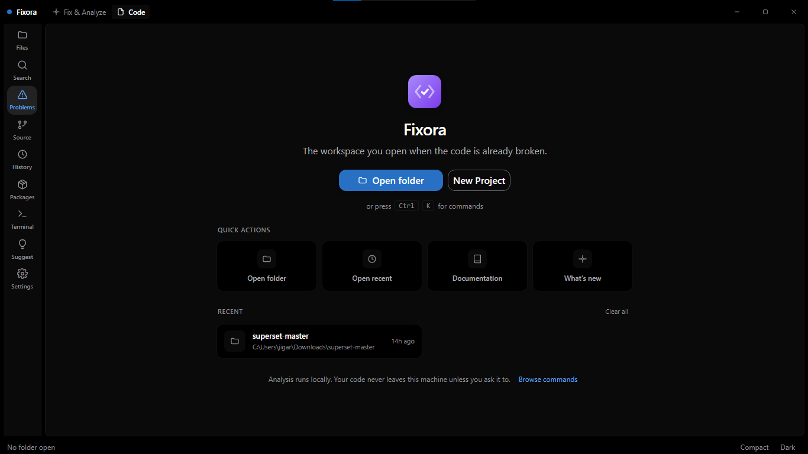
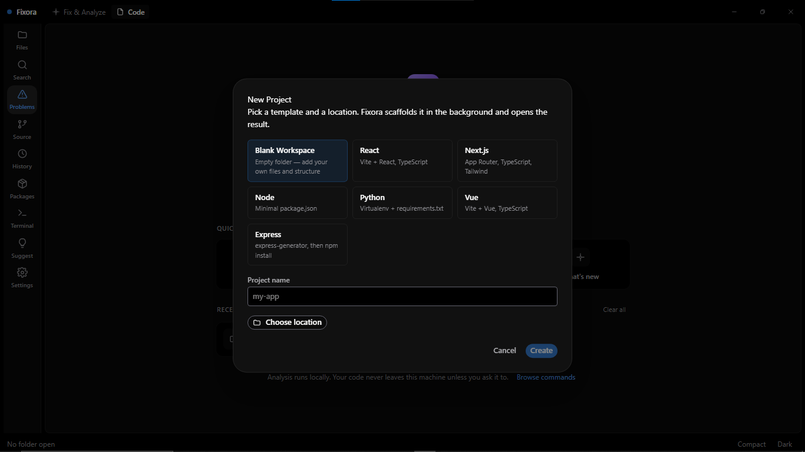
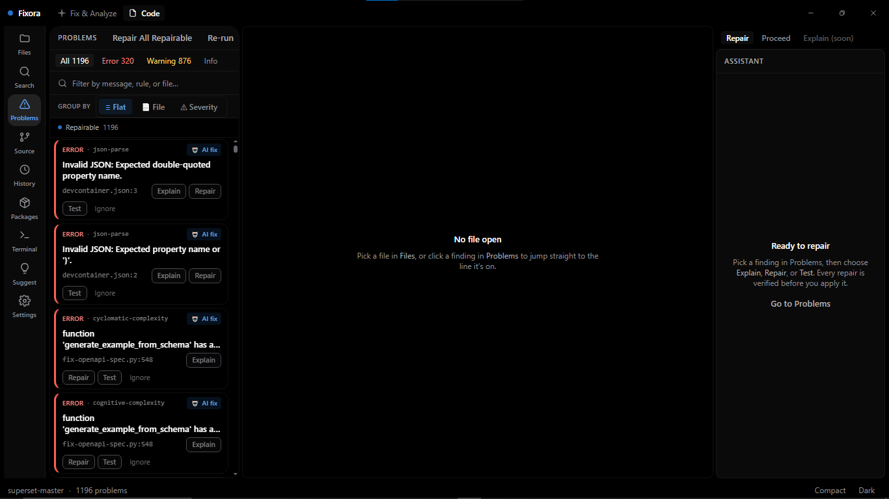
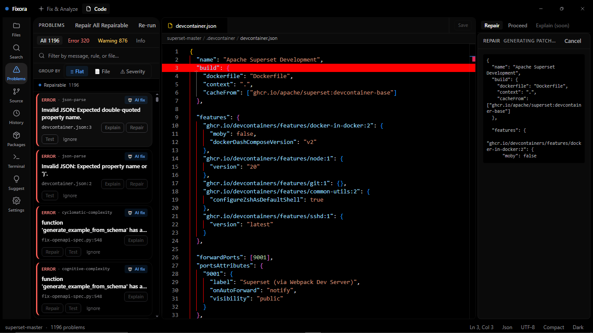
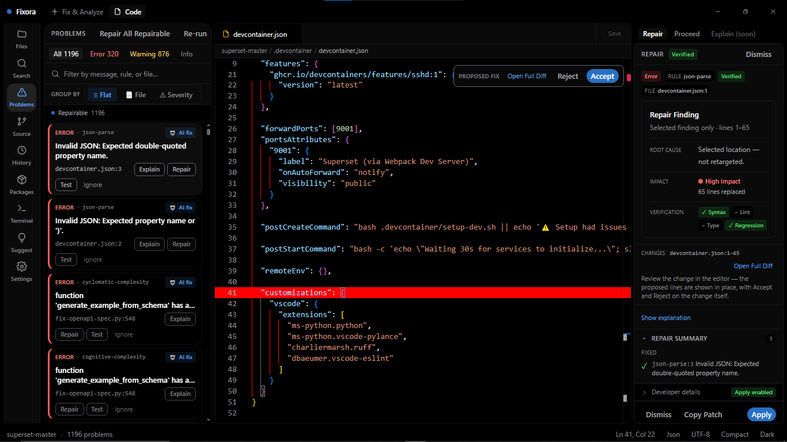
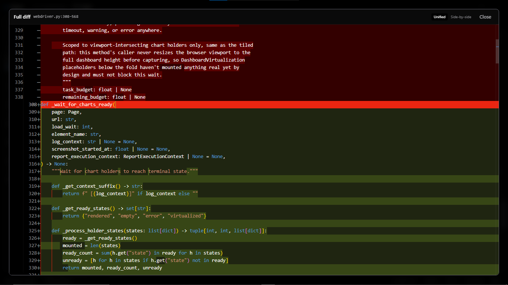
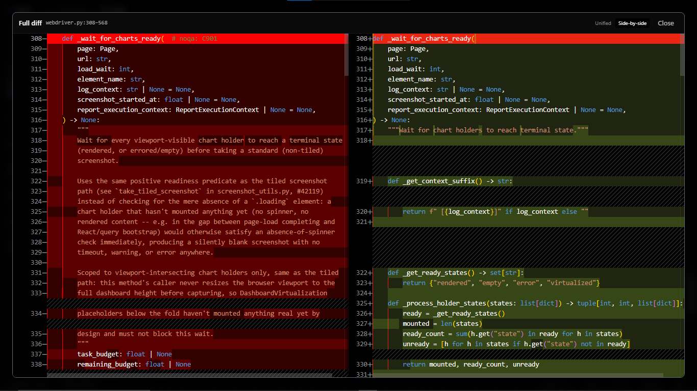
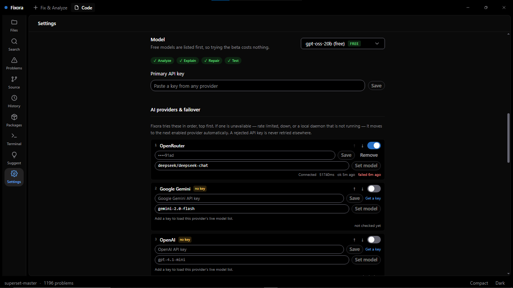
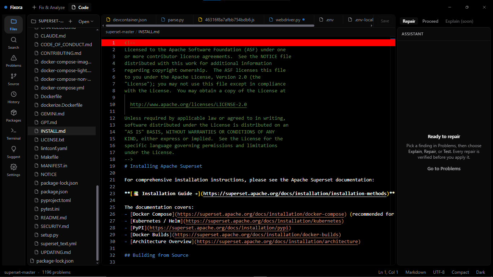

Fixora repairs your code with AI you can actually trust — every fix is verified against your own linters and type-checker before you apply it. Bring your own key. Your code never leaves your machine.
Free with your own API key
Analyzers, in parallel
Languages, deeply
Local & private
What you get
Fixora runs the tools you already trust, then uses AI only on top of what they found — never instead of them.
ESLint, TypeScript, Ruff, mypy, go vet and Semgrep — your config, your rules — plus built-in complexity, JSON and CSS/HTML checks. All ten run concurrently: ~30s first run on a mid-size project, ~266ms on a re-run once unchanged files are cached. Findings are grounded in real tool output, not a model's opinion.
Rule, severity, category, exact line and column, the code in question, why it triggered, and how the fix usually looks — so you can decide whether you even need AI.
Every AI repair is applied in a throwaway copy, re-analysed, and syntax-checked before a single byte touches your real file. You see a verdict — verified, unresolved, or regression — before you can apply it.
Nothing is written behind your back. Read the diff, copy it, or apply it — and a repair that introduced a new problem cannot be applied at all.
Monaco, editable, with Ctrl+S, unsaved-change indicators and optional auto save. Fix things yourself when that is faster than asking.
Every analysis and every applied repair is recorded in a local SQLite database. It is on your disk, and it stays there.
The pipeline is the product
"The AI suggested this" is worth little. "This fix resolves the finding, compiles, and breaks no other check" is worth shipping.
Your own tree-sitter, ESLint, tsc, ruff, mypy, go vet — findings with a rule, a location, and evidence. Zero AI here.
The model fixes one grounded finding and returns its reasoning alongside the code, so you can read WHY before you read the diff. A secret gate blocks any key or credential from ever reaching the provider.
The fix is applied to a throwaway overlay and your analyzers re-run. Verified or Regression — honestly.
Review the diff, apply with one click, and keep a local audit trail of every repair. Regressions can't be applied.
See it
Findings on the left, your code in the middle, and everything known about the selected problem on the right.









Trust, as testable claims
These aren't marketing lines — they're how the product is built.
Pricing
Contact
Questions, bug reports, or tell us what broke.
Questions
Analysis is entirely local — no network at all. When you ask for an explanation or a repair, the relevant code is sent directly from your machine to the AI provider you configured, using your key. It never passes through a Fixora server, because there is no Fixora server.
You paste an API key from a provider such as OpenRouter. It is encrypted with Windows DPAPI through your OS keychain and never leaves the main process — the interface can never read it back. You are billed by that provider, at their prices, for what you use.
A gate that runs before every request: a path denylist for files like .env
and key material, pattern matching for known credential formats, and an entropy check as
a backstop. If it matches, the request is blocked and nothing is sent — you are told
what matched and why.
The proposed fix is applied to a throwaway copy of your project, then your analyzers and a syntax check are run again on it. Fixora compares the findings before and after and reports a verdict: verified if the problem is gone and nothing new appeared, unresolved if it is still there, or regression if the fix introduced something new. A regression cannot be applied.
TypeScript, JavaScript, Python and Go — deliberately deep rather than broad. Fixora runs the analyzers your project already configures for those languages.
Fixora has a free tier with 10 AI repairs per day. GO ($2.99) gives 50 repairs/day. PRO ($4.99) gives unlimited repairs and all features. Bring your own API key — we never charge for AI usage.
The installer is not yet code-signed, so SmartScreen shows a warning for it. Choose “More info” then “Run anyway”. Signing is planned for the paid launch — until then, only install a build you downloaded from this page.
Analysis, the editor, findings, problem details and history all work with no network. Only the AI features need connectivity, since they call your provider.
Docs & contact
The user guide covers setup, your first analysis, the repair flow and troubleshooting.
Your feedback is genuinely useful — especially a repair that got a verdict wrong.
Found something security-relevant? Please report it privately rather than in a public issue.
Changelog